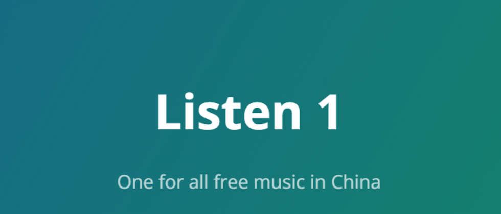
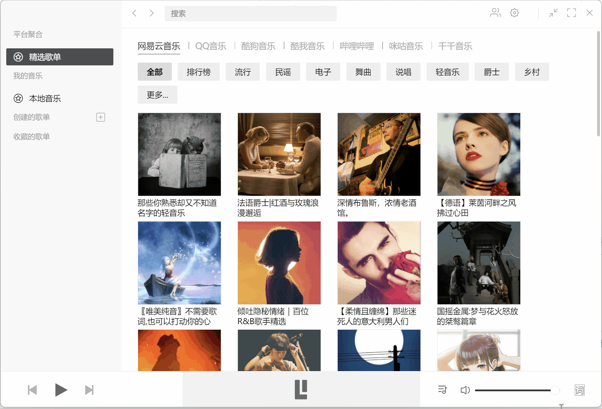

Listen 1 对比评测：一站式聚合听歌，到底值不值得从你现在的播放器里迁移过去
用过四五个同类工具之后，我来说说 Listen 1 在聚合音乐播放器这个类目里的定位——它的多平台聚合和跨端形态是亮点，但也有自己的取舍。
同类播放器格局：它在哪个位置
聚合音乐播放器这个赛道，说白了就是在各家流媒体平台之间搭一座桥——不用装一堆 App，一个界面搜遍全网。这个类目里大致分两类：一类是大厂官方做的整合方案，比如某云音乐的导入歌单、QQ 音乐的跨平台收藏；另一类是开源社区自己攒的聚合器，Listen 1 属于后者，而且是这类里存活时间最长、形态最完整的项目之一。
Listen 1 的官网上对自己的定位写得很清楚：给不想被单一平台绑定的用户一个独立的听歌入口。如果你觉得"手机里装三四个音乐 App 太吵"、"这个月会员快到期了想换平台但歌单带不走"、"NAS 上想搭个自己的音乐门户"——Listen 1 瞄准的就是这些场景。而如果你只在某一个平台听歌、有完整的会员生态，那它大概率派不上用场。
差异化一：一套账号，五个入口
我用了 Listen 1 大半年，最直观的感受就是——它不是一个 App，而是一整套产品线。同样一个收藏歌单，你可以在 Chrome 浏览器插件里听，可以切到 macOS 桌面版全屏听，可以用手机 React Native 版出门听，甚至可以把 Python 网页服务器版部署在 NAS 上，在任何设备的浏览器里打开。这种跨形态的一致性，同类里能做到的寥寥无几。

它的 Web 服务器版本尤其值得单独说。很多人不知道 Listen 1 最早就是一个 Python 项目，后来才衍生出插件、桌面、移动各个端。这个设计思路反过来也让自托管变得特别容易——GitHub Release 有打包好的压缩包解压即跑，想折腾的话 Nginx 反代、Docker 一键部署都行，具体部署步骤可以翻一下listen1文档，写得挺细的，部署完就是你自己的音乐门户，公网可访问或者挂在 VPN 里都行。对于有 NAS 或私有服务器的用户来说，这一条本身就足够成为选择 Listen 1 的理由。
差异化二：真正的跨平台搜索与歌单迁移
同类工具里，不少说自己"聚合多平台"，实际搜的时候还是要切换 Tab、或者只接入了两三家。Listen 1 在这点上做得比较彻底：搜索框一次输入，同时调用多家平台的接口返回结果，歌曲条目上会带平台来源的小标签，点开详情页还能看哪些平台有这首歌的资源。歌单方面，它支持从其他平台歌单链接直接导入——贴一个网易云歌单 URL 进来，它会批量抓取歌曲名和歌手，再到各个平台去匹配音频源。
我实际用过的场景：原来用某云音乐有一个 80 多首的歌单，会员到期后想切到 QQ 音乐但懒得一首一首重新搜。用 Listen 1 导入后，它自动把歌单里的歌去匹配其他平台，大部分都找到了可用的播放源，个别匹配不上的手动搜一下补进去就行，全程大概十分钟。这种"歌单跟着人走、不跟着平台走"的体验，是聚合工具相比官方 App 最大的价值。

差异化三：本地存储 + 可选云同步
Listen 1 还有一个反直觉的设计：歌单数据默认存在本地。桌面版存在 Electron 用户数据目录，插件版存在浏览器 localStorage，移动端存在 App 内部存储。好处是什么？你完全不依赖任何第三方账号就能用，不用担心哪个平台突然封接口导致歌单丢失；坏处也很明显——默认不跨设备同步，电脑上建的歌单，手机端看不到。
但它提供了 GitHub Gist 备份作为补充。登录你的 GitHub 账号，一键把歌单推到一个 Gist 里，换设备后拉下来就能恢复。这意味着同步能力是可选的，你要就开、不要就不开，而且备份存在你自己的 GitHub 里，不是 Listen 1 的服务器。这个设计思路在同类里也算少见——大部分聚合器要么强制你注册自家账号，要么干脆不提供同步。
它的取舍：优势背后的代价
说了三个亮点，再讲讲为什么它可能不适合你。
上手门槛：桌面版安装包从官方下载拿，macOS 用 DMG 拖拽安装就行，Windows 也是标准的安装包流程，但 Firefox 插件需要处理签名豁免——要进 about:config 改两个开关，对普通用户来说有一定门槛。Web 服务器版虽然说"解压即跑"，但要自托管到公网还是得懂点 Nginx、HTTPS 配置，完全不懂服务器的用户可能直接放弃。
无自动更新 + 无多用户隔离：所有版本都不会自动检查更新，得自己去 GitHub Release 蹲。如果你有个 NAS 部署了 Listen 1 给家人用，那麻烦了——它不支持多用户，所有人共用同一个歌单和搜索历史，想分开用只能各自部署一个实例。
播放源兼容性：它的核心价值是聚合多平台，但各家平台的接口偶尔会调整，Listen 1 需要社区跟进适配。我用过几次遇到"某家的歌突然放不出来"的情况，过一两周社区发了更新就恢复了，但这期间就得切其他平台的播放源临时顶上。官方 App 虽然不聚合，但自家接口的稳定性肯定比社区项目好。
选购结论
说了这么多，最后落地到一个问题：你该选 Listen 1 吗？
如果你符合下面任意一条，它值得你花十分钟装一下试试：
- 你同时用两家以上的音乐平台，会员轮换频繁，歌单迁移是常态
- 你有 NAS 或私有服务器，想搭一个自托管的音乐门户
- 你反感各家强制注册和账号绑定，希望听歌这件事尽量轻量、数据归自己
但如果你的情况相反——只用一家平台、会员长期稳定、对折腾技术没兴趣——那 Listen 1 的优势基本用不上，反而要承受它的更新不及时、偶尔的播放源失效这些小问题，不如继续用官方 App 省心。
我的实际建议是：先装个插件版体验两天，搜几首你常听的歌、试一下导入歌单功能。如果这两个操作让你觉得"哦原来可以这样"，那再考虑上桌面版或者自托管；如果觉得"好像也没比我现在用的方便多少"，那就及时止损。聚合工具的价值从来不是"更好听"，而是"更自由"——你在乎这份自由，它就是最好的选择。顺带一提，Listen 1 的项目资料在GitHub、Gitee、GitCode 三个仓库都能拿到，国内访问选后两个体验更流畅。